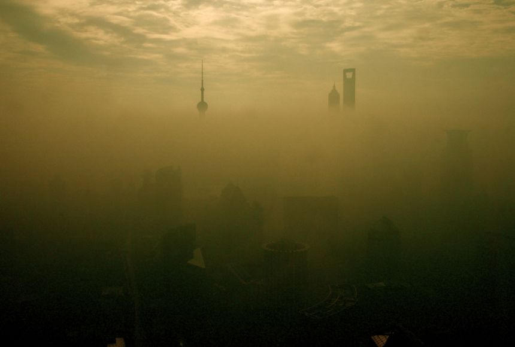
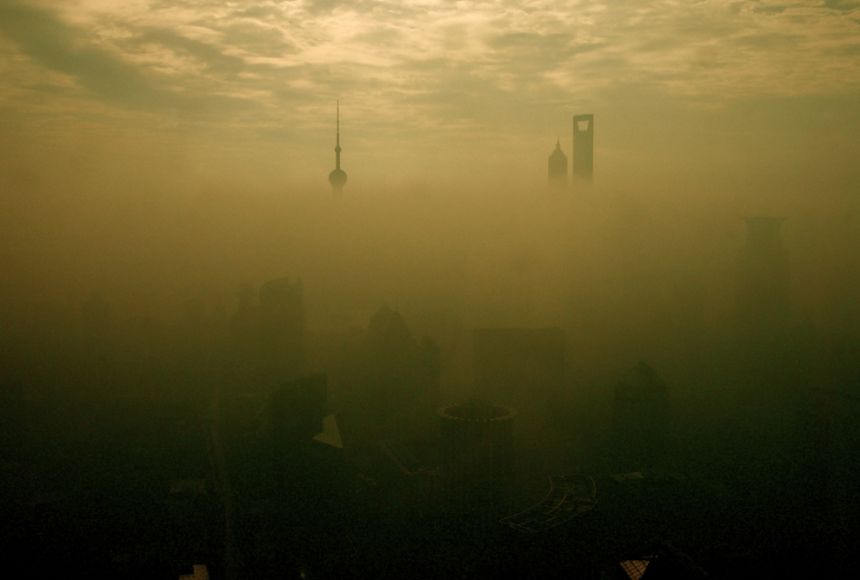

A Guide to Our Planet's Pollutants
Carbon Monoxide is a colorless, odorless gas that can be harmful when inhaled in large amounts. CO is released when something is burned. The greatest sources of CO to outdoor air are cars, trucks and other vehicles or machinery that burn fossil fuels. A variety of items in your home such as unvented kerosene and gas space heaters, leaking chimneys and furnaces, and gas stoves also release CO and can affect air quality indoors.

Nitrogen Dioxide is one of a group of highly reactive gases known as oxides of nitrogen or nitrogen oxides (NOx). Other nitrogen oxides include nitrous acid and nitric acid. NO2 is used as the indicator for the larger group of nitrogen oxides. NO2 primarily gets in the air from the burning of fuel. NO2 forms from emissions from cars, trucks and buses, power plants, and off-road equipment.

Ozone at ground level is a harmful air pollutant, because of its effects on people and the environment, and it is the main ingredient in “smog." Ozone is most likely to reach unhealthy levels on hot sunny days in urban environments, but can still reach high levels during colder months. Ozone can also be transported long distances by wind, so even rural areas can experience high ozone levels.


Sulphur Dioxide is the component of greatest concern and is used as the indicator for the larger group of gaseous sulfur oxides (SOx). Other gaseous SOx (such as SO3) are found in the atmosphere at concentrations much lower than SO2. Control measures that reduce SO2 can generally be expected to reduce people’s exposures to all gaseous SOx. This may have the important co-benefit of reducing the formation of particulate sulfur pollutants, such as fine sulfate particles. Emissions that lead to high concentrations of SO2 generally also lead to the formation of other SOx. The largest sources of SO2 emissions are from fossil fuel combustion at power plants andother industrial facilities.
PM2.5 Particulates are the main cause of reduced visibility (haze) in parts of the United States, including many of our treasured national parks and wilderness areas. The size of particles is directly linked to their potential for causing health problems. Small particles less than 10 micrometers in diameter pose the greatest problems, because they can get deep into your lungs, and some may even get into your bloodstream. Exposure to such particles can affect both your lungs and your heart.

PM10 Particulate matter pollution contributes to acid rain and climate change. In addition to the worsening of acid rain, particulate pollution can also change weather patterns, cause drought, contribute to global warming, and cause the ocean to acidify.